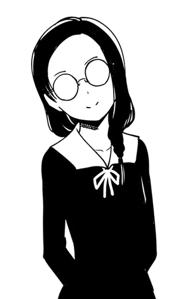

Kobachi Osaragi(大仏おさらぎ こばち, Osaragi Kobachi) is a supporting character in the series. She is a second-year student at Shuchi'in Academy and member of the Public Morals Committee. She is Miko Iino's best friend and one of The Impossible Girls.
| Kobachi Osaragi | |
|---|---|
| Manga | Anime |
|  | |
| Profile | |
| Age | 16 |
| Birthday | 6 June |
| Gender | Female |
| Eye Color | Red |
| Hair Color | Black |
| Height | 163 cm |
| Personal Status | |
| Occupation | High School Student
Public Morals Committee Member |
| Grade | Freshman (1-B) |
| Portrayal | |
| Japanese VA | Rina Hidaka |
| English VA | Leah Clark |
| Debut | |
| Manga | Chapter 65 |
| Anime | Episode 16 |
Kobachi's name was derived from the Stone Begging Bowl of the Buddha (仏の御石の鉢), the object from The Tale of the Bamboo Cutter, that Ishidzukuri no Miko (Miko's counterpart) had been tasked with collecting..
Kobachi is a beautiful young girl with collarbone-length black hair that is styled to have its tied ends rest on her left shoulder and wears round glasses that have been with her since childhood, which obscure her eyes.
When in Shuchi'in Academy uniform, she wears a yellow armband on her left arm to distinguish herself as a member of the Public Morals Committee.
She is considered very attractive by her fellow freshmen and classmates, and boys often wait at the school gate to ask her out.
Kobachi is a girl of few words and an astute observer who is very caring to Miko Iino that she has been looking out for her for over a decade due to her gullible nature.
As member of the Public Morals Committee, she also has a fine sense of justice, however not as intense as Miko's.
She has her own unique slang called 'Tsubamese', which surfaces when she is excited. In this, she talks in concepts rather than words. Rei Onodera stated that the trick to understand it is to feel instead of think.
She has great confidence in her beauty and despite the fact that there's always guys waiting for her at the school gate, she doesn't mind them fawning over her.
She has a hidden perverted side, showing interest in a confiscated Boy's Love (BL) magazine and describing the idea of sexual immorality in the Student Council as "a pretty hot situation".
Kobachi has studied in Shuchi'in since primary school and has always been a trusted friend of Miko Iino. She supported her numerous times during Student Council President Elections and remained loyal despite her failing to win any of it.
At some point during the preparation for the Devoted Hearts Festival, she began dating Kazeno. Sometime after the Christmas Eve, they broke up because they weren't on the same page.
Later on, she "borrowed" the report on Yu Ishigami's incident with Ko Ogino in middle school from the Student Council and brought it to Tsubame Koyasu's attention.
The name Kobachi means "child" (こ) (ko), "palce" (ば) (ba) and "blood" (ち) (chi) in Hiragana. Her last name is written as Daibutsu, but it is read as Osaragi.